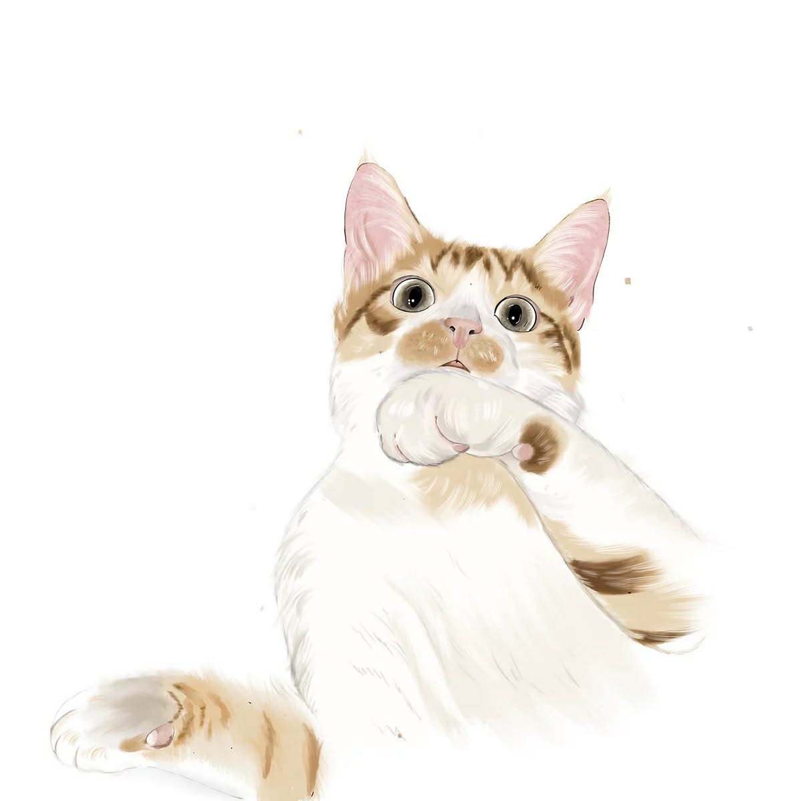
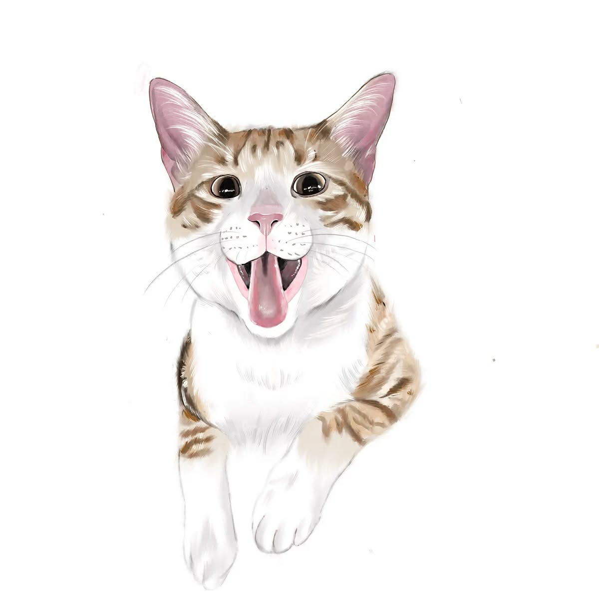

東京旅行小卡

DAY 2 — 河口湖一日遊
紅葉迴廊、大石公園、富士山
11 / 21 ( 五 )
07:30
新宿 → 大月 ※07:30–08:30
08:50
大月 → 河口湖 ※08:50–09:44
10:00
紅線巴士 → 紅葉迴廊散步拍照
河口湖站搭紅線巴士 → 久保田一竹美術館站
11:40
不動茶屋 午餐
從紅葉迴廊步行 → 餺飥不動 河口湖北本店
13:15
大石公園（富士山＋湖景）
前往大石公園，可選紅線巴士（約15分）or沿湖散步（約30分）
15:00
河口湖站周邊自由散步
搭紅線巴士由大石公園 → 河口湖站
16:49
河口湖 → 新宿
16:49–18:45

DAY 3 — 輕井澤一日遊
雲場池、榆樹街小鎮、Outlet
11 / 22 ( 六 )
07:24
東京 → 輕井澤（新幹線） ※7:24–8:42
09:00
雲場池散步
步行約 20 分或搭公車
10:30
舊輕井澤銀座街
從雲場池步行約15～20分，Snoopy、小店逛街
13:30
中輕井澤 → 榆樹街小鎮・石之教堂
搭 Town Loop 巴士或電車＋接駁
15:45
輕井澤 Prince Shopping Plaza Outlet
回到輕井澤站南口步行約 3 分鐘
17:41
輕井澤 → 東京（新幹線）
17:41–18:52
DAY 4 — 上野
上野動物園、阿美橫町、今半
11 / 23 ( 日 )
10:00
上野動物園（看熊貓）
12:00
阿美橫町午餐 + 閒晃
14:00
上野公園散步
17:30
人形町今半 壽喜燒（上野廣小路店）
19:00
夜逛阿美橫町
DAY 5 — Snoopy & 六本木點燈
南町田 Grandberry Park 一日小旅行
11 / 24 ( 一 )
09:30
東京出發 → 南町田 Grandberry Park
10:30
史努比博物館 參觀＆拍照
12:30
PEANUTS Cafe 午餐
14:00
Grandberry Park 逛街散步、買紀念品
15:30
回東京市區 → 搭日比谷線前往六本木
16:30
六本木聖誕之丘 等待點燈（17:00 點燈）
18:00
六本木點燈散步拍照（櫸木坂・毛利庭園・Midtown）
20:00
六本木周邊 晚餐（居酒屋／拉麵／和食）
DAY 6 — 原宿・涉谷購物日
銀杏大道 · 潮牌 · LOFT 大採購
11 / 25 ( 二 )
8:00
明治神宮外苑 銀杏大道散步＆拍照
10:00
表參道／原宿 逛潮牌、Human & Blue Bottle
12:00
涉谷敘敘苑
14:00
涉谷LOFT開逛
18:00
晚餐
預留約 3 小時慢慢逛文具・雜貨
20:00
新宿開逛
DAY 7 — 藏前・吉祥寺・晴空塔
文青咖啡 · 公園散步 · 夜景
11 / 26 ( 三 )
10:00
藏前 文青散步（咖啡、小店、手拭、雜貨）
12:30
藏前 午餐
蕎麥麵、茶泡飯、輕食咖啡皆可
14:00
前往吉祥寺 — 井之頭公園、商店街散步
17:00
吉祥寺「美登利壽司」排隊＆享用晚餐
19:00
前往押上 晴空塔 夜景 & 逛商場
21:00
返回住宿，結束文青＋夜景的一天